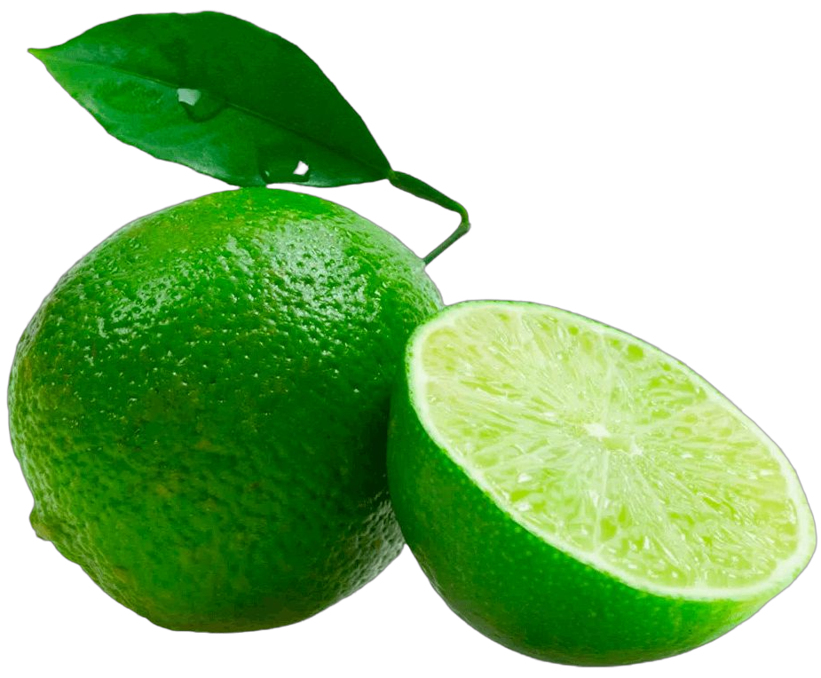

It's not just Fruit
It's LIM4O
Limão (espécie Citrus limon) é o fruto do limoeiro, uma pequena árvore de folha perene originária da região sudeste da Ásia, da família das rutáceas. No Brasil é também popularmente denominado limão siciliano, de forma a distingui-lo de três outras espécies de citrinos chamadas de "limões" no Brasil e "limas" nos restantes países lusófonos: Citrus x latifolia ou limão-taiti, Citrus aurantiifolia ou limão-galego, Citrus x limonia ou limão-cravo.
Learn More
